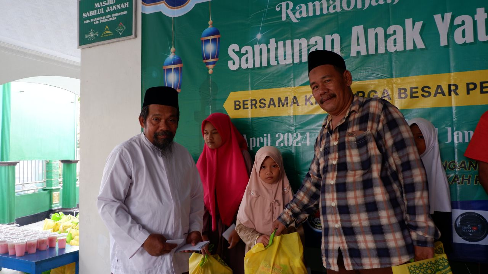
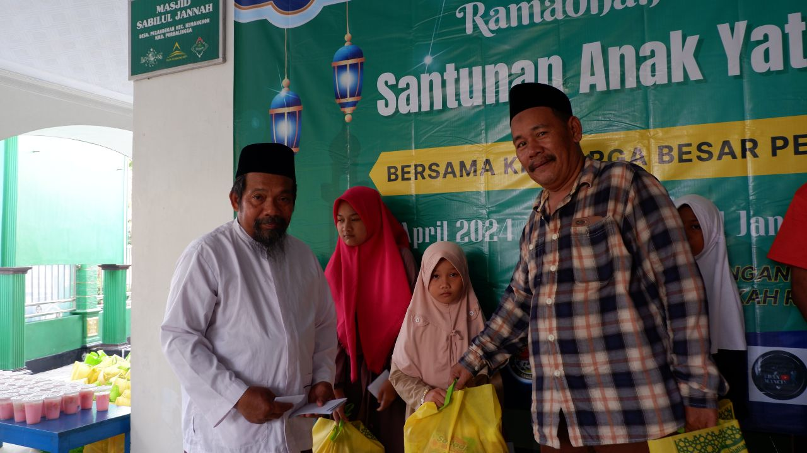

Ramadan Ceria: RepublikMancing Berbagi untuk Yatim & Dhuafa
RepublikMancing.com – Ramadan adalah bulan kepedulian dan kebersamaan. Di momen penuh berkah ini, RepublikMancing bersama Forum Komunikasi Warga Gandekan menggelar program “Ramadan Ceria Bersama Yatim & Dhuafa”, sebagai bentuk nyata kepedulian komunitas pemancing terhadap masyarakat.
Kegiatan ini bertujuan untuk menghadirkan kebahagiaan bagi anak-anak yatim dan kaum dhuafa di wilayah Gandekan dan sekitarnya melalui santunan, bingkisan, serta buka puasa bersama.
“Bukan seberapa besar yang kita miliki, tetapi seberapa tulus kita berbagi.”
📌 Tentang Program Ramadan Ceria
Ramadan Ceria adalah kegiatan sosial kolaboratif yang menghadirkan nilai kepedulian dan kebersamaan antara komunitas pemancing dan warga Gandekan.
- 👥 Penerima manfaat: Anak yatim & dhuafa
- 🤝 Penyelenggara: RepublikMancing & Forum Komunikasi Perantau Gandekan
- 🕌 Lokasi: Masjid Sabilul Jannah, Dusun II, Desa Pegandekan
- 📍 Kecamatan Kemangkon, Kabupaten Purbalingga, Jawa Tengah
🕌 Rangkaian Kegiatan
- Pembukaan acara
- Sambutan Panitia Penyelenggara RepublikMancing & Forum Komunikasi Perantau Gandekan
- Tausiyah dan sambutan Ustadz sebelum waktu berbuka puasa
- Buka puasa bersama
- Pembagian bingkisan dan santunan berupa amplop kepada anak yatim dan dhuafa
- Doa bersama dan penutup
📅 Tanggal:Minggu, 15 Maret 2026
⏰ Waktu: Menjelang waktu berbuka puasa hingga selesai
🎁 Apa yang Mereka Terima?
- Santunan uang tunai
- Paket sembako
- Bingkisan Ramadan
- Buka puasa bersama
- Doa dan kebersamaan
📍 Lokasi Kegiatan
Masjid Sabilul Jannah – Dusun II, Desa Pegandekan, Kecamatan Kemangkon, Kabupaten Purbalingga, Jawa Tengah
🤲 Dukung Program Ini
Kami membuka kesempatan bagi para donatur, pemancing, dan masyarakat umum untuk berpartisipasi dalam program Ramadan Ceria. Donasi yang terkumpul akan sepenuhnya disalurkan untuk santunan dan kebutuhan kegiatan.

Klik QRIS untuk memperbesar
Saya Mau Berdonasi
💳 Donasi via Transfer Bank
Bagi donatur yang ingin menyalurkan bantuan melalui transfer bank, silakan ke rekening berikut:
Bank: BRI
Atas Nama: Mochamad Nasirudin (RepublikMancing)
Nomor Rekening: xxxxxxxx
Mohon konfirmasi setelah transfer agar donasi dapat kami catat dan salurkan dengan amanah.
📸 Galeri Kegiatan Sebelumnya
 

💚 Mengapa RepublikMancing Peduli?
RepublikMancing percaya bahwa dunia pemancingan tidak hanya tentang ikan dan lomba, tetapi juga tentang persaudaraan dan empati. Dari kolam pancing, tumbuh kebersamaan. Dari kebersamaan, lahir kepedulian.